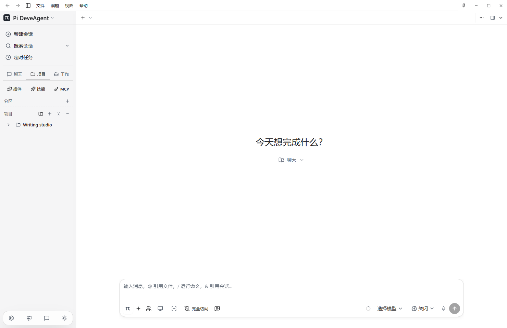
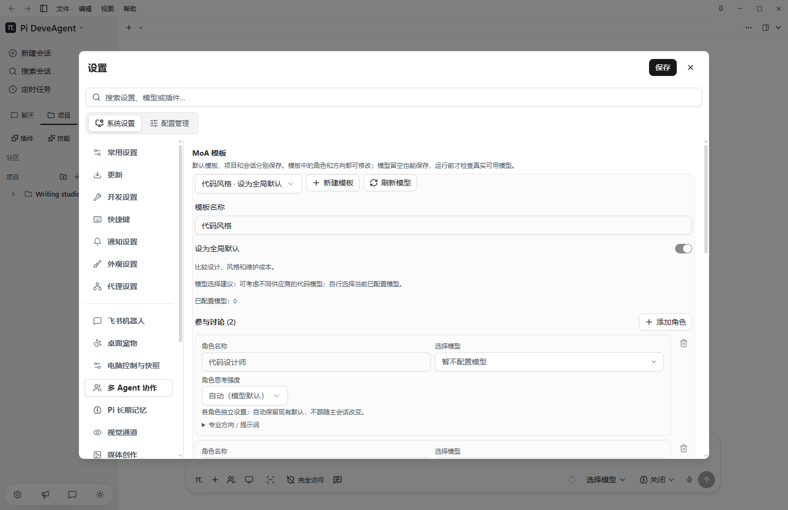

会话与项目
用分区、项目和置顶整理工作。各个会话保留自己的模型与思考设置，历史可以继续。
你的模型。你的工作方式。
写作、办公、开发。在一个清晰的桌面里管理会话、工具与模型，让每次开始都接得上。
Windows x64 · MIT
本页面提供 15 种语言。软件目前仅支持简体中文与英文。

PI · API · MCP · MOA
围绕 Pi 核心扩展桌面能力。已经顺手的保留，需要增强的补齐。
用分区、项目和置顶整理工作。各个会话保留自己的模型与思考设置，历史可以继续。
内置多种国内外服务与兼容接口预设，也可填写自己的反代地址。账号和密钥由你配置。
连接 MCP，管理插件与 Skill。工具按权限执行；电脑控制是单独的可选扩展。
按会话设置备用模型；遇到支持的服务错误时尝试接续，工具状态不明确时先暂停。
MIXTURE OF AGENTS
通过 MoA 组合你配置的模型，分工、审查、汇总。轮数与费用由任务和模型决定。
协作质量、速度与费用取决于任务、角色配置和模型，不承诺固定 Token 节省。

LOCAL MODELS
连接 Ollama、LM Studio、llama.cpp，按需发现和管理本地运行时。可用能力取决于运行时和模型。
VOICE & ARTIFACTS
真实麦克风波形显示输入；停止录音后转写到输入栏。可以选择本地语音或已配置的转写服务。
在右侧预览 HTML、PDF、图片、音视频与表格文本；PPT 等文件可交给外部应用打开。
MAKE IT YOURS
软件提供黑白、牛皮纸、护眼绿、柔粉与雾紫等主题，并可调整颜色强度。以下为网站配色预览。
官方 Pi 与桌面外壳分别维护。已有配置和会话继续使用，每个桌面版本保留独立发行记录。
PI DEVE AGENT
下载完整 Windows x64 安装包，安装后配置自己的模型服务。发行包不带个人 API、认证或会话。